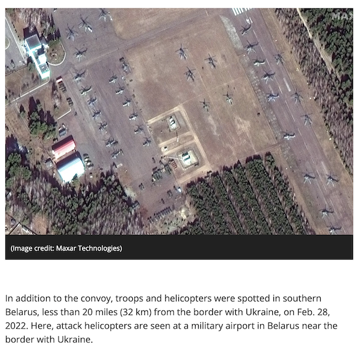

Einleitung
Contents
Einleitung#
Projektarbeit zu Machine Learning Algorithms and Implementation
von Markus Armbrecht und Sophie Horn
im Wintersemester 2022/23
Use Case#
Wenige Monate vor dem Angriff der Russischen Förderation auf die Ukraine äußerten sich amerikanische und britische Geheimdienste besorgt über Truppenbewegungen im Grenzgebiet zur Ukraine [Sabbagh, 2022].
Im März 2022 verwies der britischen Geheimdienst mit Sorge auf einen russischen Militärkonvoi, welcher sich Kiew näherte [Lister et al., 2022].
Ähnliche Aufnahmen wurden auch in Bezug auf Fluggerät gemacht, wie die nachfolgende Abbildung zeigt.

Text in Bild: [Space.com, 2022]
Bild: Maxer Technologies
Die Satellitenaufklärung kann militärisch eingesetzt werden, um Aktivitäten zu überwachen.
Ein Beispiel ist die auf Satellitenbildern zu beobachtende russische Expansion mit militärischen Flugplätzen in der Arktis [Morgan, 2022].
In einem weiteren Beispiel zeigen Satellitenbilder den Ausbau einer Basis der chinesischen Marine mit neuen Schiffsanlegern und nahegelegenen Hubschrauberlandeplätze. Dort stationiertes Personal wird für einen Angriff auf Taiwan als wichtig eingestuft. [Yeo, 2021]
Mit Hilfe der durch die Auswertung von Satellitenbildern gewonnenen Informationen können auf diplomatischer und militärischer Ebene rechtzeitige Interventitionen eingeleitet werden. Diese können bestenfalls den Frieden erhalten und eine diplomatische Lösung oder zumindest die rechtzeitige Evakuierung von Zivilisten ermöglichen.
Vorgehen#
Ziel dieser Projektarbeit ist die Auswertung von Satellitenbildern zu militärischen Flugplätzen. Für die ausgewerteten Flugplätze soll mittels Bilderkennung der Bestand an Flugzeugen und Hubschraubern bestimmt werden.
Ein Zufallsfund ergab die Möglichkeit für das Arbeiten mit speziellen militärischen Fluggerät. Auf Satellitenbildern von Hawaii wurden B2 Tarnkappenbomber entdeckt. Wenige Screenshots davon werden verwendet, um die Funktionsweise von YOLOv5 zu erläutern und die Performance-Metriken vorzustellen. In diesem Zusammenhang wird auch eine Möglichkeit zur weiteren Beschaffung von Daten präsentiert.
Anschließend wird das Satellitenbildprojekt vorbereitet - inkl. EDA in Form eines Health Checks. Die Modelle wurden in Jupyter-Notebooks auf Google Colab Pro+ trainiert. Für bessere Übersichtlichkeit wird die Evolution in den getesteten Hyperparametern über einen Dataframe beschrieben. Die einzelen Training-Outputs sind über Links zu den Colab-Notebooks abrufbar. Ergänzend erfolgt Feature Enginnering mit Fokus auf die Anpassung der Label für ein geeignetes YOLOv5-Format.
Nach einer Diskussion zu den Modellergebnissen wird das final ausgewählte Modell auf Satellitenbilder von Militärbasen angewendet. Die Vorführung basiert auf Screenshots von einer US Basis in Japan. Weitere Bilder von Militärbasen wurden mit dem Map Tile Downloader abgerufen und mit SAHI anstelle der integrierten YOLOv5 Detection ausgewertet.
Es wird gezeigt, dass es möglich ist den Bestand an Fluggeräten über Satellitenbilder auszuwerten und in einem Balkendiagramm zu visualisieren.
Im Rahmen der Recherche von zusätzlichen Satellitenbildern wurde ein mit dem Use Case vergleichbares Airbus Produkt gefunden. In Zusammenarbeit mit Preligens wird ein “Defence Site Monitoring” angeboten. Also die oben beschriebene Projektidee mit besseren Daten und einem Modell welches zwischen Flugzeugtypen unterscheiden kann. [Airbus OneAtlas, n.d.]
from IPython.display import YouTubeVideo
YouTubeVideo('nCJffElsOsc',width=560)
Datensatz#
Eigens genierter Daten, gelabelt mit labelImg.
Download unter: Link zum Google-DriveDOTA Dataset von [Xia et al., 2018]
Packages#
Für diese Arbeit wurden folgende Packages / Tools verwendet.